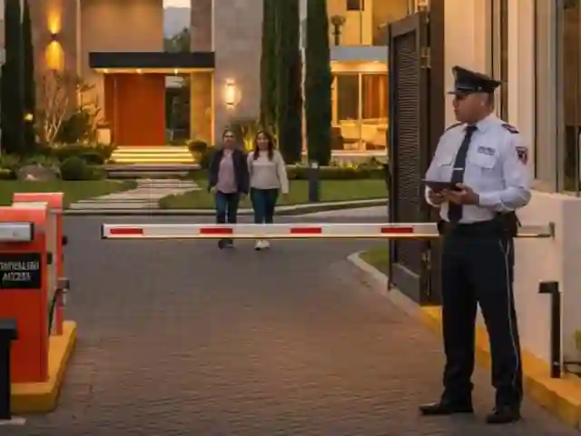
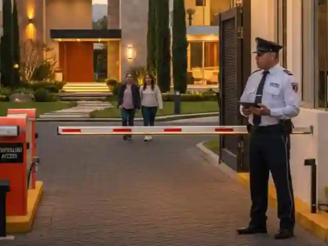

En Este Articulo
Los condominios ubicados en Polanco y Santa Fe representan la cumbre del desarrollo inmobiliario residencial en Ciudad de Mexico. Estas zonas de alta plusvalia concentran a residentes que exigen los mas altos estandares de seguridad, privacidad y proteccion patrimonial. Implementar sistemas de seguridad integral no es un lujo, sino una necesidad fundamental para preservar inversiones significativas y garantizar la tranquilidad de cada familia.
Caracteristicas de Seguridad en Zonas de Alto Valor
Las zonas residenciales premium como Polanco y Santa Fe presentan desafios de seguridad unicos que requieren soluciones especializadas. La concentracion de residentes de alto perfil, ejecutivos internacionales, empresarios y familias con patrimonio significativo convierte estos desarrollos en objetivos potenciales para amenazas especificas que van desde robo con violencia hasta secuestro express y extorsion.
Valor de Mercado Superior
Los condominios con sistemas de seguridad integrales mantienen valores de mercado significativamente superiores a desarrollos comparables con seguridad deficiente, protegiendo la inversion patrimonial de propietarios.
La ubicacion estrategica de estos desarrollos, su cercania a centros corporativos, embajadas y zonas comerciales premium, demanda respuestas profesionales y coordinadas. La seguridad para condominios en estas zonas debe integrar multiples capas de proteccion que combinen tecnologia de vanguardia con personal altamente capacitado.
Polanco: El Corredor Diplomatico y Cultural
Polanco se caracteriza por su alta densidad de embajadas, consulados, boutiques de lujo y restaurantes premium. Los condominios enfrentan desafios relacionados con manifestaciones politicas, eventos culturales que generan congestion y la presencia constante de turistas internacionales. Los sistemas de seguridad deben anticipar situaciones donde el perimetro pueda verse afectado por eventos externos.
Santa Fe: Seguridad Corporativa Residencial
Como principal distrito de negocios de Ciudad de Mexico, Santa Fe alberga condominios que frecuentemente combinan uso residencial con oficinas ejecutivas. Esta mezcla requiere sistemas que segreguen y controlen simultaneamente multiples zonas con diferentes niveles de acceso, horarios operativos distintos y perfiles de usuarios variados.
Guardias Certificados con Perfil Premium
El elemento humano constituye la piedra angular de cualquier sistema de seguridad efectivo para condominios de lujo. Los guardias de seguridad profesionales que operan en Polanco y Santa Fe deben poseer certificaciones vigentes de la Secretaria de Seguridad Ciudadana, capacitacion en proteccion ejecutiva, manejo de crisis y atencion a residentes de alto perfil.
Consejo Profesional
Verifique que los guardias asignados a su condominio cuenten con certificacion SSC vigente y capacitacion especifica en protocolos para residencias de lujo. El personal debe conocer personalmente a los residentes, sus vehiculos y sus rutinas habituales.
Competencias Especializadas del Personal Premium
- Certificacion SSC vigente: Requisito legal indispensable con actualizacion periodica
- Capacitacion en proteccion ejecutiva: Tecnicas de observacion avanzada y deteccion de amenazas
- Comunicacion profesional: Trato ejecutivo y discreto con residentes VIP
- Idiomas extranjeros: Preferentemente ingles para interaccion con residentes internacionales
- Primeros auxilios avanzados: Certificacion en RCP y manejo de emergencias medicas
- Manejo de crisis: Protocolos de respuesta ante amenazas y situaciones de estres
Los guardias intramuros especializados no son simplemente vigilantes, sino profesionales de seguridad residencial que comprenden las necesidades especificas de comunidades exclusivas. La rotacion estrategica de turnos y supervision constante garantizan que los estandares de calidad se mantengan consistentemente altos.
CCTV con Inteligencia Artificial
Los sistemas de vigilancia remota con CCTV modernos han evolucionado significativamente mas alla de las camaras analogicas tradicionales. La integracion de inteligencia artificial transforma la videovigilancia pasiva en sistemas proactivos de deteccion de amenazas que identifican automaticamente comportamientos anomalos antes de que se materialicen en incidentes.
Importante Considerar
La implementacion de reconocimiento facial y video analytics debe cumplir con normativas de proteccion de datos personales. Asegurese de que su proveedor de seguridad cuente con politicas claras de privacidad y almacenamiento de informacion biometrica.
Caracteristicas de Sistemas CCTV Premium
- Camaras IP 4K o superior: Captura de detalles faciales y placas vehiculares en alta definicion
- Vision nocturna avanzada: Sensores infrarrojos y tecnologia starlight para condiciones de baja iluminacion
- Video Analytics con IA: Deteccion automatica de comportamientos sospechosos y alertas en tiempo real
- Reconocimiento facial biometrico: Identificacion automatica de residentes autorizados y alertas de intrusos
- Almacenamiento en nube cifrado: Proteccion de evidencia digital ante manipulacion o destruccion fisica
- Aplicaciones moviles: Monitoreo remoto para administradores y residentes autorizados
Los algoritmos de machine learning analizan patrones historicos de accesos y comportamientos para identificar anomalias que podrian indicar amenazas. Cuando se detectan desviaciones significativas de patrones establecidos, el sistema genera alertas para revision humana inmediata.
Control de Accesos Biometrico
Los sistemas tradicionales de control de accesos basados en tarjetas magneticas han sido superados por tecnologias biometricas que ofrecen seguridad superior. Los lectores de huella dactilar, reconocimiento facial 3D y reconocimiento de iris proporcionan autenticacion inequivoca de identidad que no puede ser falsificada, prestada o robada.
Proceso de Implementacion de Control Biometrico
Evaluacion de Puntos de Acceso
Analisis de todos los accesos peatonales, vehiculares y de servicio para determinar tecnologia optima
Registro Biometrico de Residentes
Captura de datos biometricos de cada residente y configuracion de permisos personalizados
Integracion de Sistemas
Conexion con CCTV, intercomunicadores y plataforma de gestion centralizada
Capacitacion y Protocolo de Visitantes
Implementacion de sistema de pre-registro digital con codigos QR temporales
Tecnologias de Control de Accesos
- Reconocimiento facial 3D: Autenticacion instantanea sin contacto fisico
- Lectores de huella dactilar: Alta precision con deteccion de dedos falsos
- Tecnologia ANPR: Reconocimiento automatico de placas vehiculares
- Torniquetes motorizados: Control fisico de acceso con integracion biometrica
- Sistemas de interlocking: Puertas dobles que previenen acceso no autorizado
- Pre-registro digital: Plataforma para autorizacion anticipada de visitantes
Evita Este Error
No dependa unicamente de tarjetas de acceso tradicionales. Estas pueden ser clonadas, prestadas o robadas, creando vulnerabilidades significativas en la seguridad del condominio. La autenticacion biometrica elimina estos riesgos.
Protocolos de Emergencia Especializados
Los condominios premium deben contar con planes integrales de respuesta a emergencias que cubran incendios, sismos, inundaciones, emergencias medicas, amenazas de seguridad y eventos de violencia. Estos planes requieren simulacros periodicos, capacitacion continua del personal y equipamiento certificado de respuesta.
Componentes del Plan de Emergencias
- Deteccion temprana de incendios: Sensores de humo y calor con notificacion automatica
- Sistemas de comunicacion masiva: SMS, notificaciones push y voceo simultaneo
- Equipamiento medico: Desfibriladores automaticos (DEA) y botiquines avanzados
- Rutas de evacuacion: Senalizacion visible y alternativas documentadas
- Refugios temporales: Areas seguras identificadas dentro del condominio
- Sistemas de respaldo: Comunicacion y energia de emergencia
Consejo Profesional
Realice simulacros de evacuacion trimestrales con participacion de residentes. Esto no solo prepara a la comunidad, sino que identifica deficiencias en protocolos que pueden corregirse antes de una emergencia real.
La capacitacion del personal de seguridad debe incluir primeros auxilios avanzados, RCP certificado, manejo de extintores y coordinacion de evacuaciones. Un guardia bien preparado puede marcar la diferencia entre un incidente controlado y una tragedia.
Coordinacion con Autoridades
La coordinacion establecida con autoridades locales es fundamental en zonas premium. Los protocolos deben incluir contactos directos con comandancias de policia sectorial, estaciones de bomberos, hospitales premium con servicios de urgencias y unidades de proteccion civil municipal.
Tiempos de Respuesta y Coordinacion por Zona
| Aspecto | Polanco | Santa Fe |
|---|---|---|
| Respuesta policial | Rapida por densidad de patrullaje | Variable por congestion vial |
| Hospitales cercanos | Hospital ABC, Hospitales premium | Hospital ABC Santa Fe |
| Consideraciones especiales | Protocolo diplomatico por embajadas | Coordinacion con seguridad corporativa |
| Evacuacion | Multiples rutas de salida | Accesos limitados, requiere planificacion |
| Helipuertos | Acceso a hospitales con helipuerto | Helipuertos corporativos cercanos |
La consultoria profesional de analisis de riesgos permite establecer protocolos personalizados que consideren las caracteristicas especificas de cada desarrollo y su ubicacion. Los tiempos de respuesta promedio desde instalaciones gubernamentales deben ser conocidos e incorporados en procedimientos internos.
Proteccion Premium para tu Condominio
Su desarrollo merece el mismo nivel de seguridad que protege a embajadas y corporativos de Fortune 500. Solicite una evaluacion exclusiva sin compromiso.
Evaluacion ExclusivaComponentes de Seguridad para Condominios Premium

 


Inversion en Seguridad y Valor Patrimonial
La inversion en seguridad profesional genera retornos tangibles que justifican ampliamente los costos asociados. Los condominios con sistemas robustos, personal profesional y protocolos establecidos mantienen valores de mercado superiores, experimentan menor rotacion de residentes y ofrecen tasas de ocupacion mas altas en el mercado inmobiliario de lujo.
Los compradores de propiedades en Polanco y Santa Fe priorizan desarrollos con seguridad profesional, dispuestos a valorar la certeza de que sus familias, patrimonio y privacidad estan protegidos por sistemas de clase mundial. Esta demanda convierte la seguridad en una inversion estrategica que protege y aumenta el valor del activo inmobiliario.
La seguridad en zonas premium no es un gasto: es una inversion que protege su patrimonio y proporciona tranquilidad a su familia.
Preguntas Frecuentes
La seguridad en zonas premium requiere guardias con perfil ejecutivo y certificacion SSC, sistemas CCTV con inteligencia artificial, control de accesos biometrico, protocolos de emergencia especializados y coordinacion directa con autoridades locales. El personal debe tener habilidades de comunicacion profesional y preferentemente dominio de idiomas extranjeros para interactuar con residentes internacionales.
Se recomiendan camaras IP de resolucion 4K o superior con vision nocturna avanzada, video analytics con IA para deteccion de comportamientos anomalos, reconocimiento facial biometrico, almacenamiento en nube cifrado y aplicaciones moviles para monitoreo remoto. Estos sistemas transforman la vigilancia pasiva en proteccion proactiva que detecta amenazas antes de que se materialicen.
El control de accesos ideal incluye autenticacion biometrica mediante huella dactilar, reconocimiento facial o iris, tecnologia ANPR para vehiculos, torniquetes motorizados, sistemas de interlocking y plataformas de pre-registro digital para visitantes con codigos QR temporales. La biometria elimina los riesgos de tarjetas clonadas o prestadas.
Los protocolos deben cubrir respuesta a incendios, sismos, emergencias medicas con desfibriladores automaticos, amenazas de seguridad y coordinacion con autoridades. Se requieren simulacros trimestrales, contactos directos con comandancias policiales y hospitales premium, y sistemas de comunicacion masiva con residentes via SMS, push y voceo.
Polanco requiere protocolos especiales por su densidad de embajadas y eventos culturales, con personal capacitado en proteccion diplomatica e idiomas. Santa Fe demanda segregacion de zonas residenciales y corporativas, horarios diferenciados de acceso y planes de evacuacion adaptados a su topografia compleja y congestion vial frecuente.
Proteccion Premium para tu Condominio de Elite
ORIGINS Private Security protege los desarrollos mas exclusivos de Polanco y Santa Fe. Guardias de elite con certificacion SSC, tecnologia de vanguardia y protocolos disenados para residentes de alto perfil. La seguridad que su patrimonio y familia merecen.
Solicitar Evaluacion Exclusiva